Anglais professionnel : Jardinier paysagiste
CAPa Jardinier paysagiste. Seize mots anglais du métier, outils, objets et gestes de tous les jours. Ressource en libre accès.
Quatre étapes : du français à l'anglais, écouter et choisir, associer, compléter une phrase au travail. Le bouton « Écouter » lit le mot en anglais britannique.
Liste de vocabulaire
| Image | Français | English | Audio |
|---|---|---|---|
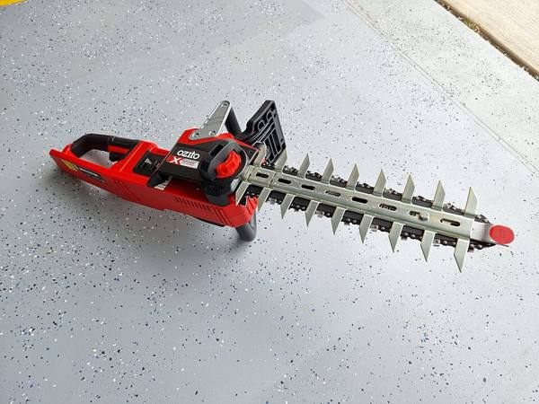 | le taille-haie | hedge trimmer | |
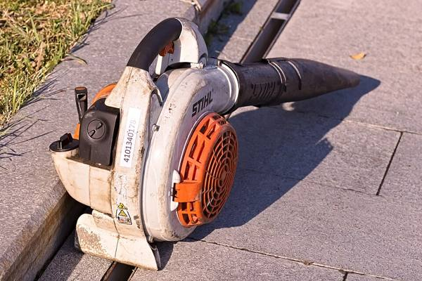 | le souffleur | leaf blower | |
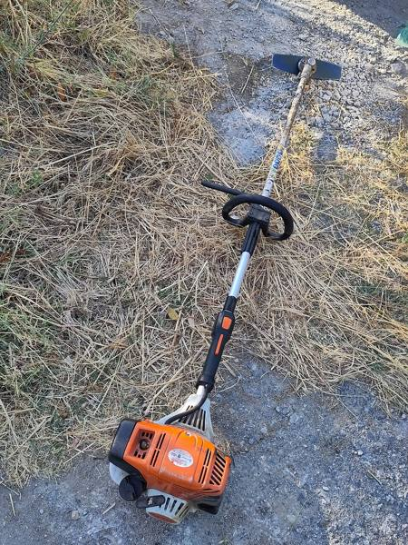 | la débroussailleuse | strimmer | |
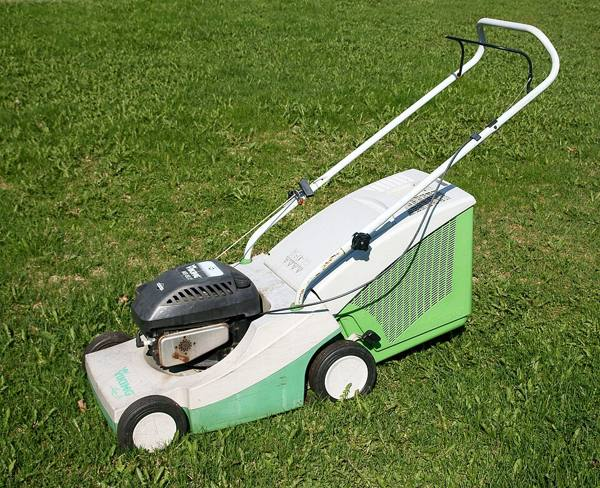 | la tondeuse à gazon | lawnmower | |
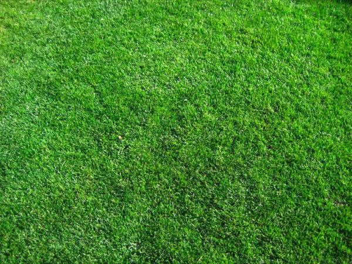 | la pelouse | lawn | |
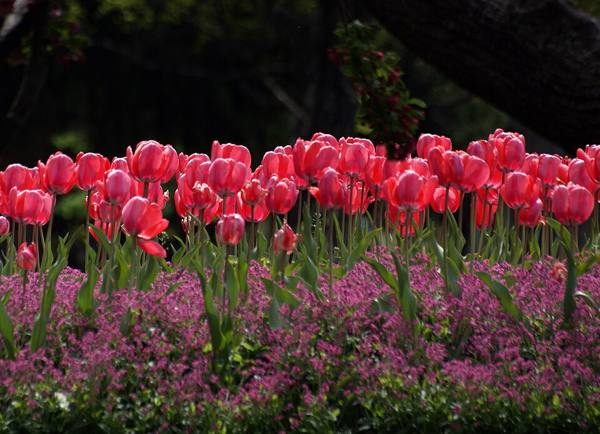 | le massif de fleurs | flower bed | |
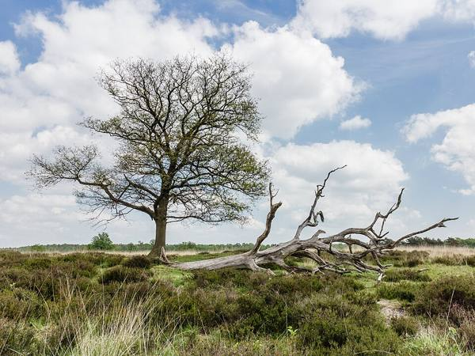 | l'arbre | tree | |
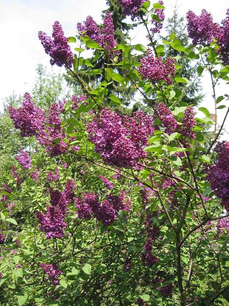 | l'arbuste | shrub | |
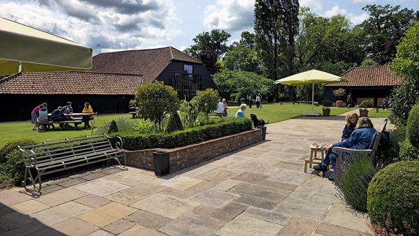 | le pavé | paving stone | |
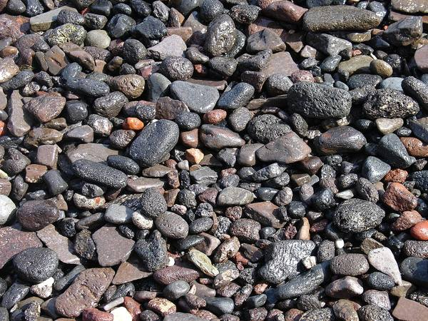 | le gravier | gravel | |
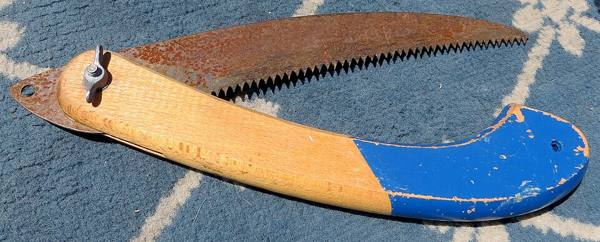 | la scie d'élagage | pruning saw | |
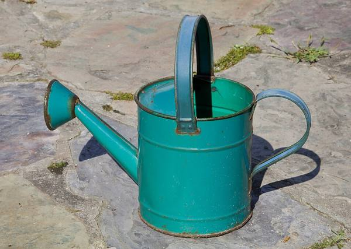 | l'arrosoir | watering can | |
 | la brouette | wheelbarrow | |
 | le râteau | rake | |
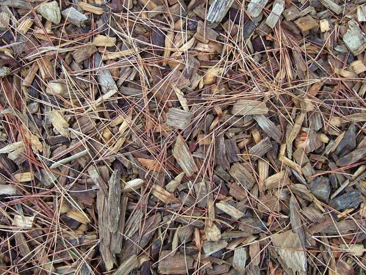 | le paillis | mulch | |
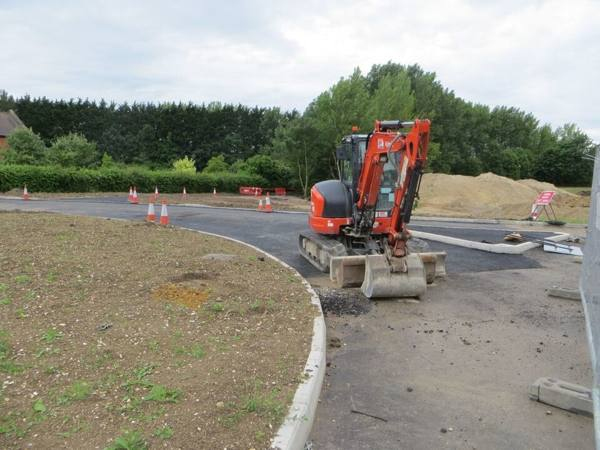 | la mini-pelle | mini digger |
Corrigé pour le professeur : phrases au travail
- Cut the hedge with the ________. (hedge trimmer)
- Blow the leaves with the ________. (leaf blower)
- Mow the ________ every week in summer. (lawn)
- Plant roses in the ________. (flower bed)
- Spread ________ around the plants. (mulch)
- Dig the hole with the ________. (mini digger)
Dans les étapes 1, 2 et 3, la bonne réponse correspond à la ligne de la liste de vocabulaire.
Crédits des images
Photos sous licence libre, issues de Wikimedia Commons, redimensionnées pour le téléphone. Dessins originaux pour les gestes et les notions.
- le taille-haie (hedge trimmer) : photo de Benlisquare, licence CC BY-SA 4.0, page du fichier sur Wikimedia Commons.
- le souffleur (leaf blower) : photo de Retired electrician, licence CC0, page du fichier sur Wikimedia Commons.
- la débroussailleuse (strimmer) : photo de Marcuscalabresus, licence CC BY-SA 4.0, page du fichier sur Wikimedia Commons.
- la tondeuse à gazon (lawnmower) : photo de kallerna, licence CC BY-SA 3.0, page du fichier sur Wikimedia Commons.
- la pelouse (lawn) : photo de Lukas007, licence Public domain, page du fichier sur Wikimedia Commons.
- le massif de fleurs (flower bed) : photo de Bernard Spragg. NZ from Christchurch, New Zealand, licence CC0, page du fichier sur Wikimedia Commons.
- l'arbre (tree) : photo de Dominicus Johannes Bergsma, licence CC BY-SA 4.0, page du fichier sur Wikimedia Commons.
- l'arbuste (shrub) : photo de Magnus Manske, licence CC BY 1.0, page du fichier sur Wikimedia Commons.
- le pavé (paving stone) : photo de Acabashi, licence CC BY-SA 4.0, page du fichier sur Wikimedia Commons.
- le gravier (gravel) : photo de Stan Zurek, licence CC BY-SA 3.0, page du fichier sur Wikimedia Commons.
- la scie d'élagage (pruning saw) : photo de Lisa Ann Yount, licence CC0, page du fichier sur Wikimedia Commons.
- l'arrosoir (watering can) : photo de Diego Delso, licence CC BY-SA 3.0, page du fichier sur Wikimedia Commons.
- la brouette (wheelbarrow) : photo de Oto Zapletal, licence CC BY 4.0, page du fichier sur Wikimedia Commons.
- le râteau (rake) : photo de U.S. Geological Survey (téléversé par Nordelch), licence Public domain, page du fichier sur Wikimedia Commons.
- le paillis (mulch) : photo de Rowan Adams, licence CC BY-SA 4.0, page du fichier sur Wikimedia Commons.
- la mini-pelle (mini digger) : photo de Bill Nicholls, licence CC BY-SA 2.0, page du fichier sur Wikimedia Commons.
Fiche de vocabulaire à imprimer
Gros caractères (16 points minimum), en trois formats :